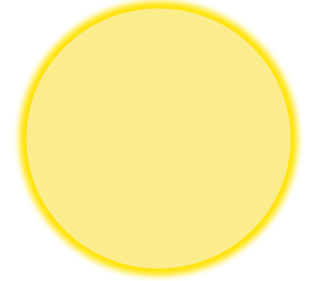

understanding your
Camera
Hover over parts of the camera to learn more about its anatomy.


Lens
Hover over parts of the camera to learn more about its anatomy.
Striking a delicate balance of aperture, focus, exposure time, and ISO are key to getting the perfect star shot.
Aperture: anything at or below f/4 will work well, but an aperture around f/2.8 will allow more light to hit your lens, letting your camera process more stars.
Focus: Focusing on infinity will allow your camera to best process the night sky.
Exposure: Exposure time heavily depends on your focal length (i.e., how large your camera’s lens is). An 18-55mm lens is most common with a DSLR or mirrorless camera. Take the number 500 and divide it by the focal length you are shooting at. With the lens mentioned above, this will be about 27 seconds.
ISO: The more you increase your ISO, the more noise your picture will exhibit. Start with an ISO of 800-1500 and take a practice shot to see if your photo is bright enough. If not, increase values until it is! In general, aim for an ISO of 2500-5000.
Light pollution will severely inhibit your ability to photograph (or even see!) the stars. Check out where to go for your best shot at seeing the Milky Way on the map below.
The night is dark and full of...stars! Don't you want to know what you're looking at? Mouse over the stars below to see the most common constellations to grace the night sky.
Lightroom 4 and Photoshop CS6 are excellent choices to edit RAW photos. This includes color correction, basic luminosity control, contrast, sharpening, and noise reduction. After finishing in Lightroom, move to Photoshop CS6. Use luminosity masks to achieve ultimate control by increasing the brightness of the stars by leaving dark areas of the photo untouched.